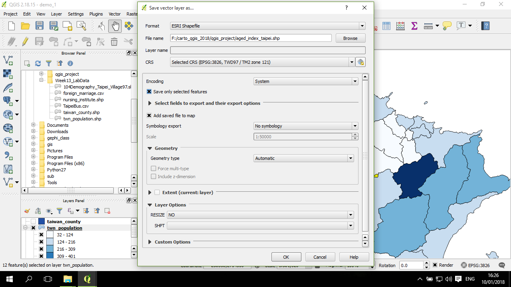

檔案儲存與輸出 (save)
在 QGIS 中進行操作，可能會需要將空間資料圖層儲存到檔案(另存 shapefile)，或是將整個專案檔作儲存 (Qgis project)。以下分別說明。這是兩種不同的事，不過都是進行儲存的動作。
儲存 QGIS 專案
在QGIS 主畫面，點 Project--> Save As... (另存)：
在跳出來的視窗，移動到要儲存的資料夾，輸入專案名稱：
完成專案儲存。
空間資料圖層輸出
對要輸出的圖層點右鍵，選擇 Save as...：

在跳出來的視窗，各個項目分別作設定，包括資料格式 (Format)，以下範例將輸出成 ESRI Shapefile (.shp 檔案組)：
在 File name 右邊點瀏覽，然後到要輸出的資料夾，輸入檔名：
CRS 部分選取要儲存到哪個座標系統，如果選的跟匯入的檔案座標系統不同，則輸出過程中 QGIS 會試著自動作投影轉換。如果沒有要作投影轉換，預設是圖層本身的座標系統：
確認完成後，點 OK 進行檔案的輸出，完成後，(預設)會有一個新的圖層自動被加入到 QGIS 圖層列表：

輸出選取的圖層
如果是要從圖層選取出特定的空間物件並儲存這些選取的空間物件，則先把所要選取的空間物件選好：
然後上述一樣的動作，這時候需要進一步處理的是，記得在這時候需要點選編碼下方的格子 (Save only selected features)，這個格子預設是沒有點選的(空格)：
